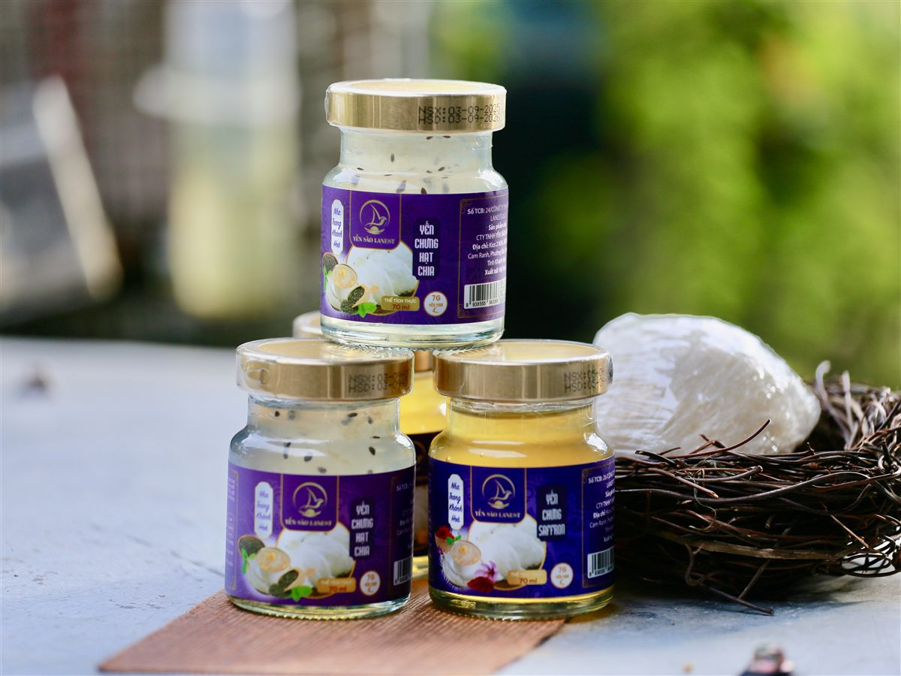
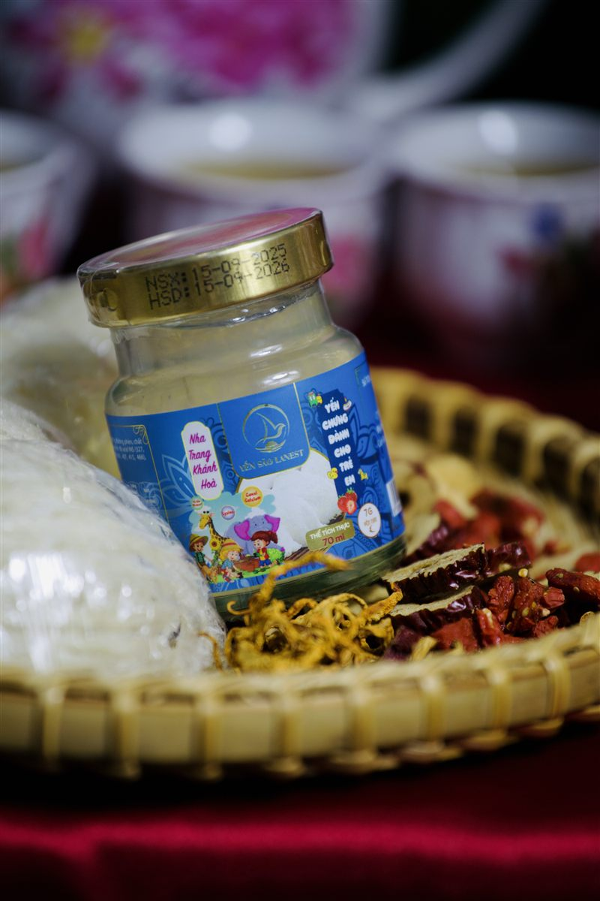

14 Vị Yến Chưng 7g Yến Tươi: Chọn Vị Nào Hợp Với Ai?
Yến Sào Lanest · Đăng ngày 25/10/2026

Đứng trước 14 hũ yến cùng kích cỡ, cùng 7g yến tươi, nhiều anh chị không biết bắt đầu từ đâu. Thật ra các vị yến chưng chỉ khác nhau ở nguyên liệu chưng kèm và loại đường, nên chọn vị chủ yếu là chọn theo khẩu vị và theo người dùng. Bài này liệt kê đúng thành phần in trên nhãn từng vị, kèm vài gợi ý chọn mà đội tư vấn của Lanest hay dùng.
Hai hũ yến chưng hạt chia (nhãn tím, lấm tấm hạt) và một hũ saffron (nước vàng óng)
1. Điểm chung của cả 14 vị
Mọi vị đều là hũ thủy tinh 70ml, mỗi hũ 7g yến tươi. Ngoài nguyên liệu riêng của từng vị, các vị dành cho người lớn đều có collagen thủy phân, chất xơ inulin, chất điều chỉnh độ acid, chất ổn định và hương yến tổng hợp; hai vị trẻ em không có collagen. Không chất bảo quản, không màu nhân tạo. Cách dùng: lắc nhẹ, dùng ngay, ngon hơn khi uống lạnh.
Và một câu Lanest luôn ghi kèm khi mô tả các vị: sản phẩm không phải là thuốc và không có tác dụng thay thế thuốc chữa bệnh.
2. Nhóm vị truyền thống: dễ uống, hợp nhiều người
| Vị | Nguyên liệu kèm (theo nhãn) | Hương vị | Thường hợp với |
| Đường phèn | Đường phèn 8g | Ngọt thanh, vị yến nguyên bản | Mọi người, người lần đầu dùng yến |
| Hạt sen | Hạt sen 0,6g, đường phèn | Bùi nhẹ, thơm dịu | Người thích vị thanh, người lớn tuổi |
| Táo đỏ | Táo đỏ 2,7g, đường phèn | Ngọt kiểu trái cây, nước hơi nâu đỏ | Người lớn, phụ nữ |
| Long nhãn | Long nhãn 2,9g, đường phèn | Ngọt đậm, thơm nhãn sấy | Người thích vị ngọt đậm |
| Tứ vị | Táo đỏ 2,7g, long nhãn 1,5g, hạt sen 0,55g, kỷ tử 0,17g, đường phèn | Nhiều lớp mùi, "có cái để ăn" | Cả gia đình |
Chưa biết chọn gì, cứ bắt đầu bằng đường phèn. Thích hũ có nhiều nguyên liệu thì chọn tứ vị.
3. Nhóm vị thảo mộc, hương riêng
| Vị | Nguyên liệu kèm (theo nhãn) | Hương vị | Thường hợp với |
| Đông trùng hạ thảo | Đông trùng hạ thảo 1,9g, đường phèn | Màu vàng cam nhẹ, mùi thơm đặc trưng | Người đã quen vị yến, quà biếu người lớn tuổi |
| Nhân sâm | Nhân sâm 0,6g, đường phèn | Đắng nhẹ, hậu ngọt của sâm | Người thích vị sâm, người làm việc trí óc |
| Gừng | Gừng 0,5g, đường phèn | Cay ấm nhẹ, vị gừng khá rõ | Người thích vị ấm, ngày se lạnh |
| Saffron | Saffron 2mg, đường phèn | Nước vàng óng, mùi thơm riêng | Người thích hương vị lạ, quà tặng phụ nữ |
| Hạt chia | Hạt chia 0,12g, đường phèn | Lấm tấm hạt, vui miệng | Người trẻ, dân văn phòng |
Vị gừng khá rõ, người chưa quen vị cay nên uống thử một hũ trước. Đọc thêm về vị này ở bài yến chưng gừng 7g yến tươi.
4. Hai vị dùng đường isomalt
Hai vị này không dùng đường phèn mà dùng 2,4g đường isomalt mỗi hũ:
- Đường ăn kiêng: 7g yến tươi, đường isomalt 2,4g.
- Đông trùng hạ thảo ăn kiêng: 7g yến tươi, đường isomalt 2,4g, đông trùng hạ thảo 1,9g.
Theo phiếu kiểm nghiệm trong hồ sơ công bố, chỉ tiêu đường tổng của hai vị này là "không phát hiện". Hai vị hợp với người muốn hạn chế đường trong khẩu phần. Tuy vậy, người đang điều trị tiểu đường hoặc bệnh chuyển hóa nên hỏi bác sĩ về lượng dùng; isomalt là đường đa, một số người nhạy cảm có thể thấy đầy bụng nếu dùng nhiều trong ngày. Xem thêm bài yến sào cho người tiểu đường.
5. Hai vị dành cho trẻ em

Hũ yến chưng dành cho trẻ em vị nguyên bản, nhãn xanh dương
- Trẻ em (nguyên bản): 7g yến tươi, đường phèn, không có collagen như các vị người lớn.
- Trẻ em hương dâu: giống công thức trên, thêm hương dâu tổng hợp để bé dễ uống. Mùi dâu đến từ hương liệu, ghi rõ trên nhãn, không phải từ dâu tươi.
Hai vị dành cho trẻ từ 1 tuổi trở lên. Lần đầu cho bé uống lượng nhỏ trước; trẻ có cơ địa dị ứng thì hỏi bác sĩ. Bé kén mùi yến có thể thử vị dâu, xem bài yến chưng cho trẻ em vị dâu.
6. Gợi ý chọn nhanh theo người dùng
- Lần đầu dùng yến: đường phèn, hạt sen.
- Biếu ông bà, cha mẹ: đông trùng hạ thảo, tứ vị, hạt sen; nhà có người cần hạn chế đường thì phối thêm hai vị isomalt.
- Người trẻ, dân văn phòng: hạt chia, saffron, nhân sâm.
- Thích vị ấm: gừng.
- Trẻ em từ 1 tuổi: vị trẻ em nguyên bản hoặc hương dâu.
- Chưa biết người nhận thích gì: mua phối nhiều vị để thử, sau đó chọn lại vị hợp nhất.
Câu hỏi thường gặp
Vị nào nhiều yến nhất?
Cả 14 vị đều 7g yến tươi mỗi hũ, chỉ khác nguyên liệu kèm. Muốn hũ đậm yến hơn thì xem dòng nguyên chất 100% (1,5g tổ yến, tương đương khoảng 15g yến tươi).
Có mua phối nhiều vị trong một đơn được không?
Được. Anh chị báo vị muốn phối khi đặt hàng qua 0258 6278 627 hoặc fanpage Yến Sào Lanest.
Người tiểu đường uống vị đường ăn kiêng hằng ngày được không?
Cần hỏi bác sĩ đang điều trị. Vị này dùng isomalt thay đường phèn, nhưng lượng dùng phù hợp tùy từng người.